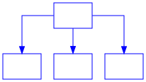
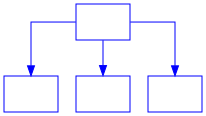

Home¶
Introduction¶
Welcome to the Python Modeling Library (PyML) for systems modeling, analysis, documentation and code generation. It includes the SysML and UML modeling languages with additional capabilities enabling advanced analysis with Python libraries and language features. PyML is built with Graphviz, Matplotlib, NetworkX, NumPy and SciPy using Python as glue code with all systems modeling. It’s fun to be powerful with Python.
New Online Capability and Simulation
The upcoming PyML v.20 can run online in a browser. Try it at the SysML Diagram Scratchpad. We are also adding system dynamics modeling and simulation capability. Preview some features online at System Dynamics Demonstrations.
Inputs and Outputs¶
The diagram below shows the primary inputs and outputs of PyML. This diagram was generated with PyML utilities.

Current Features¶
This early release of PyML contains library functions for the following:
Activity diagrams
Latex and PDF document generation utilities
Feedback¶
We value your feedback. Tell us how we can make PyML, its documentation and this website more useful. Please send comments, suggestions and interest in supporting the development to info@pyml.fun.
Citation references, like [CIT2002]. Note that citations may get rearranged, e.g., to the bottom of the “page”. .. [CIT2002] A citation
(as often used in journals).
Definition lists:
- what
Definition lists associate a term with a definition.
- how
The term is a one-line phrase, and the definition is one or more paragraphs or body elements, indented relative to the term. Blank lines are not allowed between term and definition.
link a term to def Sphinx
link to a term in the glossary while showing different text reStructuredText
glosssary
- Sphinx¶
Sphinx is a tool that makes it easy to create intelligent and beautiful documentation. It was originally created for the Python documentation, and it has excellent facilities for the documentation of software projects in a range of languages.
- RST¶
|RST| is an easy-to-read, what-you-see-is-what-you-get plain text markup syntax and parser system. It is useful for in-line program documentation (such as Python docstrings), for quickly creating simple web pages, and for standalone documents. |RST| is designed for extensibility for specific application domains. The |RST| parser is a component of Docutils.